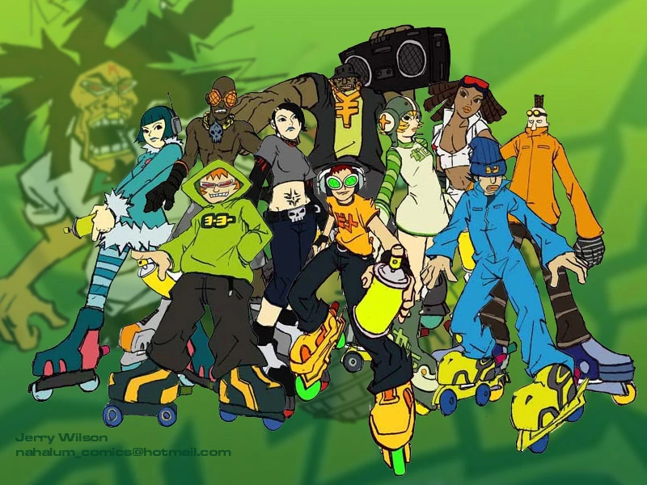
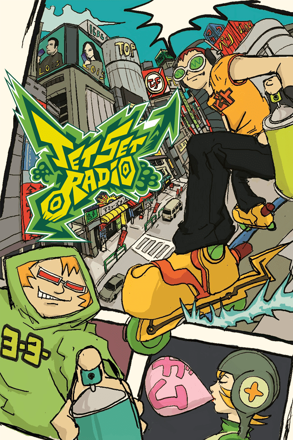

starting a website
 
this is a video game i like called jet set radio
check out my old website!
links to assignments and labs!
citing code
text adventure
p5 + array
final assignment
lab 1
lab 2
lab 3
lab 4
lab 5